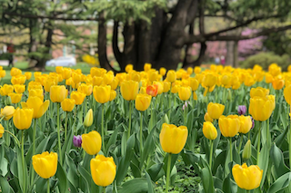

| 8:45am 🚽 |
 Meet at Union Station (MARC waiting room).
Even if the waiting area is full, the train is huge and there is no need to rush.
Don't forget to bring bike lights for the ride back home.
Meet at Union Station (MARC waiting room).
Even if the waiting area is full, the train is huge and there is no need to rush.
Don't forget to bring bike lights for the ride back home.
There are several MARC ticket vending machines. The Amtrak machines no longer sell MARC tickets. Buy round-trip tickets ($18) to avoid buying a return ticket in Baltimore. Expect to bike 17 miles in Baltimore. Beginning of route is gently uphill; rest is downhill or flat. |
| 8:55am 🚽 |
 Depart Union Station (DC 8:55am → Baltimore 9:57am).
The train should include the bike car (at the far end of the platform), which has 16 bike racks.
If for some reason the bike car is missing, all other cars allow bikes, albeit only 2 per car.
The MARC IV railcars accommodate bikes on the folding seats, but they advise you bring a bungee cord to secure it (not a big deal if you forget).
See Bikes on MARC Train, and this video.
Depart Union Station (DC 8:55am → Baltimore 9:57am).
The train should include the bike car (at the far end of the platform), which has 16 bike racks.
If for some reason the bike car is missing, all other cars allow bikes, albeit only 2 per car.
The MARC IV railcars accommodate bikes on the folding seats, but they advise you bring a bungee cord to secure it (not a big deal if you forget).
See Bikes on MARC Train, and this video.
|
| 9:57am 🚽 |
 Penn Station
Penn Station
10:02am bike 1.8 mi north (13 min):
|
| 10:15am |
 Waverly 32nd Street Farmers Market. Open 7:00am to Noon. Zeke's Coffee, Uptown Bakers, etc.
Waverly 32nd Street Farmers Market. Open 7:00am to Noon. Zeke's Coffee, Uptown Bakers, etc.
10:41am bike 1.3 mi north (9 min):
|
| 10:50am |

Sherwood Gardens: tulip displays.
11:47am bike 0.8 mi west (5 min):
11:57am bike 2.0 mi west (13 min):
|
| 12:10pm 🚽 |
 Lunch at Well Crafted Kitchen,
which shares space with Union Craft Brewing (both open at noon).
Both are a part of Union Collective, a former Sears warehouse.
Lunch at Well Crafted Kitchen,
which shares space with Union Craft Brewing (both open at noon).
Both are a part of Union Collective, a former Sears warehouse.
1:03pm bike 1.0 mi south (7 min):
|
| 1:10pm |
 Hampden. Start at Atomic Books. Then get a snowball at Quality Snowballs. Do what the native Baltimoreans do and add marshmallow topping for 75¢.If you like antiques there are many shops here. If you like pinball, there is a small arcade in the back of Holy Frijoles.
Hampden. Start at Atomic Books. Then get a snowball at Quality Snowballs. Do what the native Baltimoreans do and add marshmallow topping for 75¢.If you like antiques there are many shops here. If you like pinball, there is a small arcade in the back of Holy Frijoles.
2:30am bike 1.0 mi southeast (5 min):
|
| 2:35pm |
 Visit Round Falls. Then take Jones Falls Trail to Fells Point.
Visit Round Falls. Then take Jones Falls Trail to Fells Point.
2:45pm bike 1.7 mi south (12 min):
3:00pm bike 2.8 mi south (20 min):
|
| 3:20pm 🚽 |
 Coffee at Pitango Cafe (alternate: Daily Grind).
Coffee at Pitango Cafe (alternate: Daily Grind).
3:44pm Bike along waterfront via Harbor Point and Harbor East: 3.6 mi south (26 min):
|
| 4:10pm |
 Climb to top of Washington Monument (open till 5:00pm). Gallery level is free; lookout level is $6. No more than five people can go up together.
Climb to top of Washington Monument (open till 5:00pm). Gallery level is free; lookout level is $6. No more than five people can go up together.
The Walters Art Museum is one block south of the Monument, has free admission, and is also open till 5:00pm. Anyone not climbing the Monument can explore the museum. Be sure to visit the Chamber of Wonders. 5:08pm bike 0.3 mi (2 min):
|
| 5:10pm 🚽 |
 Light dinner at San Pablo Tacos (alternate: Iggies Pizza).
Light dinner at San Pablo Tacos (alternate: Iggies Pizza).
6:01pm bike 1.1 mi (9 min):
|
| 6:10pm 🚽 |
 Pinball/video games at North Avenue Market
Pinball/video games at North Avenue Market
7:16pm bike 0.5 mi (4 min):
|
| 7:20pm 🚽 |
 Penn Station. Take the 7:30 train.
Penn Station. Take the 7:30 train.
MARC's last three trains are:
|